Eigenvalues, Eigenvectors, SVD, PCA, Optimization, and Low-Rank Structure for Machine Learning#
This note is designed to learn elemntary concepts in linear algebra for machine learning, representation learning, deep learning, and numerical optimization
Roadmap#
Eigenvalues and eigenvectors
Why diagonalization works
Coordinate changes and the meaning of \(P^{-1}x\)
Worked diagonalization example
When diagonalization fails
Singular Value Decomposition (SVD)
Comparison: eigendecomposition vs SVD
PCA from covariance and from SVD
Low-rank approximation and model compression
Hessian eigenvalues and optimization in deep learning
Solved exercises
Further practice
import numpy as np
import matplotlib.pyplot as plt
np.set_printoptions(precision=4, suppress=True)
1. Eigenvalues and eigenvectors#
Most linear maps mix coordinates. A general transformation can:
stretch
compress
rotate
shear
combine all of these
But an eigenvector is a special direction along which the map is simple:
the direction is preserved
only the length changes
if \(\lambda < 0\), the direction flips
In a mathematical formualtion, Let \(A \in \mathbb{R}^{n \times n}\). A nonzero vector \(v\) is an eigenvector of \(A\) if
\(Av = \lambda v\)
for some scalar \(\lambda \in \mathbb{R}\) or \(\mathbb{C}\).
The scalar \(\lambda\) is the eigenvalue associated with \(v\).
So eigenvectors are the directions in which the transformation reveals its internal structure.
2. Why eigenvectors simplify a transformation#
Suppose \(A\) has \(n\) linearly independent eigenvectors \(v_1,\dots,v_n\) with eigenvalues \(\lambda_1,\dots,\lambda_n.\) Because these eigenvectors form a basis, every vector \(x\) can be written as
Now apply \(A\):
and by linearity, $\(Ax = c_1Av_1 + \cdots + c_nAv_n.\)$
Since each \(v_i\) is an eigenvector,
so
Key Insight#
When we express a vector in the eigenvector basis, the transformation \( A\) acts in a very simple way:
each coordinate \( v_i \) is scaled independently by \( \lambda_i \)
there is no mixing between directions
the transformation becomes completely decoupled
In other words:
In the eigenvector basis, a complicated linear transformation reduces to independent scaling along each axis.
Deeper Interpretation#
In standard coordinates, a matrix may mix components (e.g., turning an \(x\)-component into part of the \(y\)-direction).
But in the eigenvector basis:
each direction evolves independently
the transformation becomes predictable and structured
This is precisely why diagonalization works:
because in the right coordinate system, the matrix is just a scaling operator.
Intuition in One Sentence#
Eigenvectors reveal a coordinate system where the transformation behaves as simply as possible.
#This plot shows how a vector is decomposed along eigenvectors the transformation scales each component independently
import numpy as np
import matplotlib.pyplot as plt
# Define matrix
A = np.array([[3., 1.],
[0., 2.]])
# Eigenvectors (manually chosen for clarity)
v1 = np.array([1., 0.])
v2 = np.array([1., -1.])
# Example vector
x = np.array([2., 1.])
# Decompose x in eigenbasis
P = np.column_stack([v1, v2])
Pinv = np.linalg.inv(P)
coords = Pinv @ x
# Components along eigenvectors
c1 = coords[0] * v1
c2 = coords[1] * v2
# Transformed vector
Ax = A @ x
def draw(ax, vec, label):
ax.arrow(0, 0, vec[0], vec[1],
head_width=0.1, length_includes_head=True)
ax.text(vec[0]*1.1, vec[1]*1.1, label)
fig, ax = plt.subplots(figsize=(7,7))
# Draw eigenvectors
draw(ax, v1, "v1")
draw(ax, v2, "v2")
# Draw decomposition
draw(ax, c1, "c1 v1")
draw(ax, c2, "c2 v2")
# Draw original and transformed
draw(ax, x, "x")
draw(ax, Ax, "Ax")
ax.axhline(0)
ax.axvline(0)
ax.set_aspect('equal')
ax.set_title("Eigenbasis: decomposition and independent scaling")
plt.show()
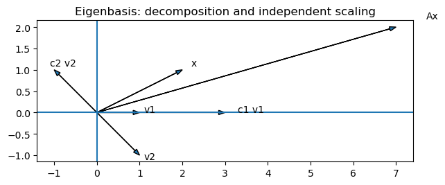
💡 This plot shows that:
\(x\) is represented in the eigenvector basis: $\( x = c_1v_1 + c_2v_2 \)$
the transformation scales each eigenbasis coordinate independently: $\( Ax = \lambda_1 c_1 v_1 + \lambda_2 c_2 v_2 \)$
👉 This is exactly what “no mixing of coordinates” means in practice. If a matrix has enough eigenvectors to form a basis, then we can choose coordinates where the transformation becomes simple independent scaling along each direction.
3. Formal proof of diagonalization#
Define
and
Then
But multiplying \(P\) by the diagonal matrix \(D\) gives exactly the same scaling of columns:
Hence
If the eigenvectors are linearly independent, then \(P\) is invertible, and therefore
Interpretation#
\(P^{-1}\): move from the standard basis to the eigenbasis
\(D\): scale independently along eigenvector directions
\(P\): return to the standard basis
A matrix is diagonalizable if and only if it has a full set of linearly independent eigenvectors, in which case it can be written as \(A = PDP^{-1}\) , where \(D\) contains the eigenvalues.
4. Why does \(P^{-1}x\) give coordinates in the eigenbasis?#
If
then for any coefficient vector
we have
So \(P\) maps coordinates in the eigenbasis to the actual vector in the standard basis.
If \(x\) is given in the standard basis and we want its coordinates \(c\) in the eigenbasis, solve
Thus
That is why \(P^{-1}x\) is the coordinate vector of \(x\) in the eigenvector basis.
5. Worked example: diagonalization by hand#
Consider
We will compute:
eigenvalues
eigenvectors
the decomposition \(A = PDP^{-1}\)
a coordinate-level interpretation
A = np.array([[3.,1.],[0.,2.]])
A
array([[3., 1.],
[0., 2.]])
Step 1: eigenvalues#
The characteristic polynomial is
Therefore the eigenvalues are
Step 2: eigenvectors#
For \(\lambda_1 = 3\),
So one eigenvector is
For \(\lambda_2 = 2\),
So one eigenvector is
v1 = np.array([1.,0.])
v2 = np.array([1.,-1.])
P = np.column_stack([v1, v2])
D = np.diag([3., 2.])
Pinv = np.linalg.inv(P)
P, D, Pinv
(array([[ 1., 1.],
[ 0., -1.]]),
array([[3., 0.],
[0., 2.]]),
array([[ 1., 1.],
[-0., -1.]]))
A_reconstructed = P @ D @ Pinv
A_reconstructed, np.allclose(A, A_reconstructed)
(array([[3., 1.],
[0., 2.]]),
True)
So indeed,
\( A = PDP^{-1}. \)
This means the transformation can be understood as:
convert to the eigenbasis
scale the first coordinate by (3)
scale the second coordinate by (2)
convert back
Coordinate demonstration#
Take
Then
gives the coordinates of \(x\) in the eigenbasis.
x = np.array([2.,1.])
coords = Pinv @ x
Ax = A @ x
coords_after = Pinv @ Ax
coords, Ax, coords_after
(array([ 3., -1.]), array([7., 2.]), array([ 9., -2.]))
D @ coords
array([ 9., -2.])
The last two vectors match, confirming that in eigen-coordinates the transformation is just diagonal scaling.
6. Visualization: standard basis vs eigenbasis#
def draw_arrow(ax, vec, label, origin=(0,0), **kwargs):
ax.arrow(origin[0], origin[1], vec[0], vec[1],
head_width=0.10, length_includes_head=True, **kwargs)
ax.text(origin[0] + 1.05*vec[0], origin[1] + 1.05*vec[1], label, fontsize=11)
fig, ax = plt.subplots(figsize=(7,7))
ax.axhline(0, linewidth=1)
ax.axvline(0, linewidth=1)
e1 = np.array([1.,0.]); e2 = np.array([0.,1.])
draw_arrow(ax, e1, r"$e_1$", linewidth=2)
draw_arrow(ax, e2, r"$e_2$", linewidth=2)
draw_arrow(ax, v1, r"$v_1$", linewidth=2)
draw_arrow(ax, v2, r"$v_2$", linewidth=2)
draw_arrow(ax, x, r"$x$", linewidth=3)
draw_arrow(ax, Ax, r"$Ax$", linewidth=3)
ax.set_xlim(-2,8)
ax.set_ylim(-5,5)
ax.set_aspect('equal')
ax.set_title("A matrix may look complicated in the standard basis,\nbut simple in the eigenbasis")
plt.show()
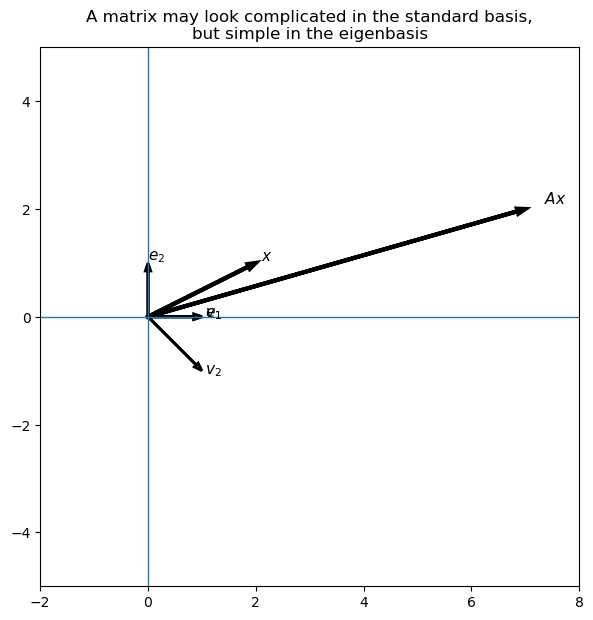
Application: Dynamics and Stability of Repeated Transformations#
One of the most important applications of diagonalization is understanding what happens when a transformation is applied repeatedly.
This appears in:
iterative algorithms
dynamical systems
optimization
neural network training dynamics
The Problem#
Suppose we repeatedly apply a matrix \(A\) to a vector \(x\):
What happens as \(k \to \infty\)?
Does the system:
explode?
vanish?
stabilize?
The Key Idea#
If \(A\) is diagonalizable:
then:
and therefore:
Why This Is Powerful#
In the eigenbasis:
then:
Key Insight#
Each component evolves independently:
if \(|\lambda_i| > 1\) → grows (unstable)
if \(|\lambda_i| < 1\) → decays (stable)
if \(|\lambda_i| = 1\)→ persists (neutral)
So the long-term behavior is completely determined by eigenvalues.
Interpretation#
The dominant eigenvalue controls the long-term direction of the system.
Eventually, the vector aligns with the eigenvector corresponding to the largest \(|\lambda|\).
Visualization#
import numpy as np
import matplotlib.pyplot as plt
# Define matrix
A = np.array([[1.2, 0.4],
[0.0, 0.9]])
# Initial vector
x = np.array([1.0, 1.0])
trajectory = [x]
# Iterate
for _ in range(20):
x = A @ x
trajectory.append(x)
trajectory = np.array(trajectory)
# Eigenvectors
eigvals, eigvecs = np.linalg.eig(A)
# ---- Plot ----
fig, ax = plt.subplots(figsize=(8, 8))
# Plot trajectory with fading effect
for i in range(len(trajectory) - 1):
alpha = (i + 1) / len(trajectory)
ax.plot(trajectory[i:i+2, 0],
trajectory[i:i+2, 1],
marker='o',
alpha=alpha,
color='blue')
# Highlight final point
ax.scatter(trajectory[-1, 0], trajectory[-1, 1],
s=80, label="Final point")
# Eigenvectors (normalized for visibility)
for i in range(2):
v = eigvecs[:, i]
v = v / np.linalg.norm(v)
ax.quiver(0, 0, v[0], v[1],
angles='xy', scale_units='xy', scale=1,
width=0.01)
ax.text(v[0]*1.3, v[1]*1.3, f"v{i+1}")
# Dynamic axis limits with padding
xmin, xmax = trajectory[:, 0].min(), trajectory[:, 0].max()
ymin, ymax = trajectory[:, 1].min(), trajectory[:, 1].max()
pad_x = (xmax - xmin) * 0.2
pad_y = (ymax - ymin) * 0.2
ax.set_xlim(xmin - pad_x, xmax + pad_x)
ax.set_ylim(ymin - pad_y, ymax + pad_y)
# Axes
ax.axhline(0, linewidth=1)
ax.axvline(0, linewidth=1)
ax.set_aspect('auto')
ax.set_title("Convergence toward dominant eigenvector")
ax.legend()
plt.tight_layout()
plt.show()
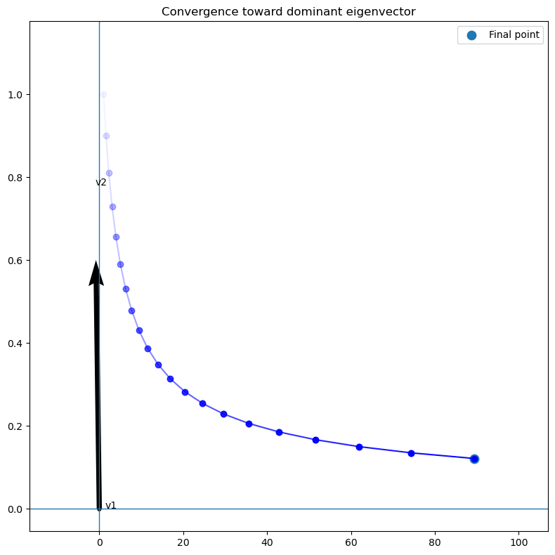
Application: PCA — Finding Structure in Data (Not Diagonalizing A)#
Principal Component Analysis (PCA) is one of the most important applications of eigenvalues and eigenvectors in machine learning.
However, it is important to clarify:
PCA is not about diagonalizing a transformation matrix \(A\).
PCA is about finding directions in the data where variance is maximized.
The Real Question PCA Asks#
Given a dataset \(X \in \mathbb{R}^{n \times d}\) (rows = samples, columns = features),
PCA asks:
Along which direction \(v\) does the data vary the most?
This is fundamentally an optimization problem, not a transformation problem.
The Objective (Core Idea)#
We want to find a unit vector \(v\) that maximizes:
\(\text{Var}(Xv)\)
Assuming the data is centered:
\(\text{Var}(Xv) = \frac{1}{n} \|Xv\|^2\)
Rewriting:
\(= \frac{1}{n} v^T X^T X v\)
Define the covariance matrix:
\(C = \frac{1}{n} X^T X\)
So the problem becomes:
\(\max_{\|v\|=1} v^T C v\)
Geometric Interpretation of the Objective#
The quantity \(v^T C v\) measures:
how much the data spreads along direction \(v\)
Geometrically:
project all data points onto direction \(v\)
measure how spread out those projections are
choose the direction where this spread is maximized
Why Does This Lead to Eigenvectors?#
This is the key geometric insight.
Step 1 — Think of \(C\) as a transformation#
The covariance matrix \(C\) is symmetric, so it:
stretches space along orthogonal directions
those directions are its eigenvectors
Step 2 — Unit sphere becomes an ellipse#
If you take all unit vectors \(v\) (a sphere) and apply \(C\), you get:
an ellipsoid
axes of the ellipsoid = eigenvectors
lengths of axes = eigenvalues
Step 3 — Maximization becomes geometric#
Now consider:
\(v^T C v\)
This is:
the squared length of \(Cv\) projected back onto \(v\)
or equivalently: how much \(v\) aligns with its stretched version
Step 4 — Where is this maximized?#
The maximum happens when:
\(v\) points in the direction where \(C\) stretches the most
That direction is:
👉 the eigenvector with the largest eigenvalue
Intuition in One Sentence#
The direction of maximum variance is the direction that gets stretched the most by the covariance matrix—and those directions are exactly the eigenvectors.
Why Eigenvectors Appear (Formal Result)#
The optimization:
\(\max_{\|v\|=1} v^T C v\)
has solution:
\(v\) = eigenvector of \(C\)
maximum value = largest eigenvalue
Mathematical Procedure#
Center the data:
\(X \leftarrow X - \text{mean}(X)\)Compute covariance:
\(C = \frac{1}{n} X^T X\)Compute eigenvalues and eigenvectors of \(C\)
Interpretation#
eigenvectors of \(C\) → principal directions
eigenvalues → variance along those directions
Important Distinction#
Diagonalization:
analyzes how a matrix \(A\) transforms vectorsPCA:
analyzes how data is distributed in space
👉 We are not studying a transformation—we are extracting structure.
Connection to SVD#
Instead of computing \(C = X^T X\), we can use:
\(X = U \Sigma V^T\)
Then:
columns of \(V\) = principal directions
\(\Sigma^2 / n\) = eigenvalues
Key Insight#
PCA finds the coordinate system where the data has maximum variance along independent directions.
One-Sentence Summary#
PCA turns “where is the data most spread out?” into maximizing \(v^T C v\), whose solution naturally aligns with the eigenvectors of the covariance matrix.
import numpy as np
import matplotlib.pyplot as plt
np.random.seed(0)
# Generate correlated data
n = 300
x = np.random.randn(n)
y = 2*x + 0.5*np.random.randn(n)
X = np.vstack([x, y]).T
# Center data
X = X - X.mean(axis=0)
# Covariance
C = np.cov(X.T)
# Eigen decomposition
eigvals, eigvecs = np.linalg.eigh(C)
# Sort descending
order = np.argsort(eigvals)[::-1]
eigvals = eigvals[order]
eigvecs = eigvecs[:, order]
# Plot
fig, ax = plt.subplots(figsize=(7,7))
ax.scatter(X[:,0], X[:,1], alpha=0.4)
# Draw principal components
for i in range(2):
vec = 2*np.sqrt(eigvals[i]) * eigvecs[:, i]
ax.arrow(0,0, vec[0], vec[1], head_width=0.15, length_includes_head=True)
ax.text(vec[0]*1.1, vec[1]*1.1, f"PC{i+1}")
ax.axhline(0)
ax.axvline(0)
ax.set_aspect('equal')
ax.set_title("PCA: principal directions (eigenvectors of covariance)")
plt.show()
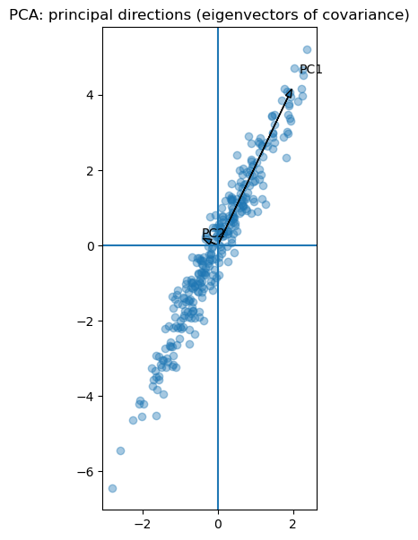
What This Plot Shows#
data lies mostly along one direction
PCA finds that direction automatically
the first eigenvector captures most variance
Why This Matters in ML#
dimensionality reduction
preprocessing before training
noise filtering
feature extraction
One-Sentence Takeaway#
PCA uses eigenvectors to find the directions where the data contains the most information.
import numpy as np
import matplotlib.pyplot as plt
# Create a covariance-like symmetric matrix
C = np.array([[3.0, 1.5],
[1.5, 1.0]])
# Generate unit circle
theta = np.linspace(0, 2*np.pi, 400)
circle = np.vstack([np.cos(theta), np.sin(theta)])
# Transform circle using C
ellipse = C @ circle
# Eigen decomposition
eigvals, eigvecs = np.linalg.eigh(C)
# Plot
fig, ax = plt.subplots(figsize=(7,7))
# Original unit circle
ax.plot(circle[0], circle[1], linestyle='--', label="Unit circle")
# Transformed ellipse
ax.plot(ellipse[0], ellipse[1], label="C transforms circle → ellipse")
# Plot eigenvectors scaled by eigenvalues
for i in range(2):
v = eigvecs[:, i]
scaled_v = eigvals[i] * v
ax.arrow(0, 0, scaled_v[0], scaled_v[1],
head_width=0.15, length_includes_head=True)
ax.text(scaled_v[0]*1.1, scaled_v[1]*1.1, f"λ{i+1} v{i+1}")
# Axes
ax.axhline(0)
ax.axvline(0)
ax.set_aspect('equal')
ax.set_title("Geometric View: Covariance stretches space into an ellipse")
ax.legend()
plt.show()
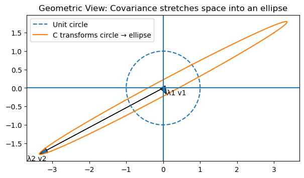
7. When diagonalization fails#
Not every matrix has enough independent eigenvectors.
Example:
This matrix has only one eigenvalue, \(\lambda=1\), and does not have two linearly independent eigenvectors.
Therefore it cannot be diagonalized, even though it is square.
J = np.array([[1.,1.],[0.,1.]])
eigvals_J, eigvecs_J = np.linalg.eig(J)
eigvals_J, eigvecs_J
(array([1., 1.]),
array([[ 1., -1.],
[ 0., 0.]]))
Orthogonality vs Basis — Why It Matters#
A common source of confusion is the role of orthogonality when working with bases and eigenvectors.
What is a Basis?#
A set of vectors forms a basis if:
they are linearly independent
they span the space
That’s all.
Orthogonality is NOT required.
Example 1 — Valid Basis (Non-Orthogonal)#
Consider:
\(v_1 = \begin{bmatrix}1 \\ 0\end{bmatrix}, \quad v_2 = \begin{bmatrix}1 \\ 1\end{bmatrix}\)
These vectors:
are not perpendicular
but are linearly independent
So they form a valid basis.
Example 2 — Orthonormal Basis#
Standard basis:
\(e_1 = \begin{bmatrix}1 \\ 0\end{bmatrix}, \quad e_2 = \begin{bmatrix}0 \\ 1\end{bmatrix}\)
These vectors are:
perpendicular (orthogonal)
unit length
👉 This is an orthonormal basis
Key Difference#
In an orthonormal basis:#
coordinates are easy to compute
each component is independent
coefficients are just dot products
In a non-orthogonal basis:#
coordinates are coupled
coefficients interact
must solve a system of equations
Why Non-Orthogonal Coordinates Are Messy#
If:
\(x = c_1 v_1 + c_2 v_2\)
then in general:
\(c_1 \neq x \cdot v_1\)
because \(v_1\) and \(v_2\) are not perpendicular.
👉 projecting onto one direction mixes in the other.
Matrix View#
Let:
\(P = [v_1 \; v_2]\)
Then:
\(x = P c \quad \Rightarrow \quad c = P^{-1} x\)
👉 coordinates require solving a system
Orthogonal Case (Special)#
If the basis is orthonormal:
\(c = P^T x\)
👉 no inversion needed
👉 computation is stable and simple
Why This Matters in Practice#
1. PCA#
uses orthogonal directions
ensures independent variance components
2. SVD#
produces orthonormal bases
avoids coordinate coupling
3. Numerical Stability#
orthogonal bases reduce errors
Key Insight#
Orthogonality is not required for a basis, but it removes interaction between coordinates and makes analysis much simpler.
One-Sentence Summary#
A basis only needs independence, but orthogonality makes coordinates decoupled, interpretable, and computationally efficient.
import numpy as np
import matplotlib.pyplot as plt
# Non-orthogonal basis
v1 = np.array([1, 0])
v2 = np.array([1, 1])
# Orthogonal basis
u1 = np.array([1, 0])
u2 = np.array([0, 1])
# Vector
x = np.array([2, 1])
# Decompose in non-orthogonal basis
P = np.column_stack([v1, v2])
c = np.linalg.inv(P) @ x
c1, c2 = c[0]*v1, c[1]*v2
fig, axs = plt.subplots(1, 2, figsize=(12,6))
# Non-orthogonal plot
axs[0].arrow(0,0,v1[0],v1[1], head_width=0.1)
axs[0].arrow(0,0,v2[0],v2[1], head_width=0.1)
axs[0].arrow(0,0,x[0],x[1], head_width=0.1)
axs[0].arrow(0,0,c1[0],c1[1], linestyle='--')
axs[0].arrow(c1[0],c1[1],c2[0],c2[1], linestyle='--')
axs[0].set_title("Non-Orthogonal Basis (Coupled Coordinates)")
axs[0].axhline(0)
axs[0].axvline(0)
axs[0].set_aspect('equal')
# Orthogonal plot
axs[1].arrow(0,0,u1[0],u1[1], head_width=0.1)
axs[1].arrow(0,0,u2[0],u2[1], head_width=0.1)
axs[1].arrow(0,0,x[0],x[1], head_width=0.1)
axs[1].set_title("Orthogonal Basis (Independent Coordinates)")
axs[1].axhline(0)
axs[1].axvline(0)
axs[1].set_aspect('equal')
plt.show()
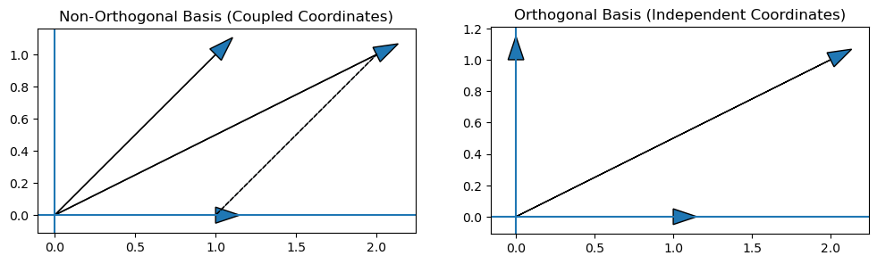
Why PCA Diagonalizes the Covariance Matrix#
We have seen that:
PCA finds directions of maximum variance
those directions are eigenvectors of the covariance matrix
Now the key question:
Why does PCA diagonalize the covariance matrix?
Step 1 — What covariance represents#
Given centered data \(X\):
\(C = \frac{1}{n} X^T X\)
The covariance matrix tells us:
diagonal entries → variance of each feature
off-diagonal entries → correlation between features
👉 Off-diagonal terms = coupling between dimensions
Step 2 — The problem with the original coordinates#
In the original basis:
features are correlated
covariance matrix is NOT diagonal
Example:
\(C = \begin{bmatrix} 2 & 1 \\ 1 & 2 \end{bmatrix}\)
👉 the \(1\)’s indicate that the two directions are not independent
Step 3 — What PCA does#
PCA finds a new basis:
\(P = [v_1 \; v_2 \; \cdots \; v_d]\)
where \(v_i\) are eigenvectors of \(C\)
Now we transform the data:
\(Z = X P\)
Step 4 — Covariance in the new basis#
The covariance of transformed data:
\(C' = \frac{1}{n} Z^T Z\)
Substitute \(Z = XP\):
\(C' = \frac{1}{n} P^T X^T X P\)
So:
\(C' = P^T C P\)
Step 5 — Why this becomes diagonal#
Since \(P\) contains eigenvectors of \(C\):
\(C P = P D\)
where \(D\) is diagonal (eigenvalues)
So:
\(C' = P^T C P = P^T (P D) = D\)
🎯 Final Result#
In the PCA basis, the covariance matrix becomes diagonal.
Geometric Meaning#
This is the most important insight:
original coordinates → correlated directions
PCA coordinates → independent directions
👉 PCA rotates the space so that:
each axis captures independent variation
no interaction between axes remains
Connection to Orthogonality#
Because \(C\) is symmetric:
eigenvectors are orthogonal
\(P^T = P^{-1}\)
So the transformation is a pure rotation (or reflection)
👉 No distortion—only reorientation
Why This Matters#
After PCA:
covariance matrix is diagonal
components are uncorrelated
each dimension has independent meaning
This is why PCA is so powerful for:
dimensionality reduction
feature extraction
noise removal
🔥 Deep Insight#
PCA is not just finding directions—it is removing dependence between dimensions.
One-Sentence Summary#
PCA finds an orthogonal basis in which the covariance matrix becomes diagonal, meaning all directions become statistically independent (uncorrelated).
import numpy as np
import matplotlib.pyplot as plt
np.random.seed(0)
# Generate correlated data
n = 300
x = np.random.randn(n)
y = 2*x + 0.5*np.random.randn(n)
X = np.vstack([x, y]).T
X = X - X.mean(axis=0)
# PCA
C = np.cov(X.T)
eigvals, eigvecs = np.linalg.eigh(C)
# Transform data
Z = X @ eigvecs
fig, axs = plt.subplots(1,2, figsize=(12,5))
# Original data
axs[0].scatter(X[:,0], X[:,1], alpha=0.4)
axs[0].set_title("Original Data (Correlated)")
# Transformed data
axs[1].scatter(Z[:,0], Z[:,1], alpha=0.4)
axs[1].set_title("After PCA (Uncorrelated)")
for ax in axs:
ax.axhline(0)
ax.axvline(0)
ax.set_aspect('equal')
plt.show()
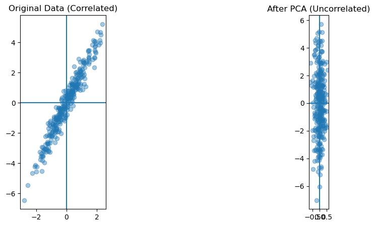
Singular Value Decomposition (SVD): The Universal Version of PCA#
We have seen that PCA diagonalizes the covariance matrix:
\(C = \frac{1}{n} X^T X\)
by finding an orthogonal basis where:
\(C' = P^T C P = D\)
This removes correlation (coupling) between features.
Now we ask a deeper question:
Can we do something similar for any matrix, not just covariance?
The answer is:
👉 Yes — this is exactly what SVD does.
The SVD Decomposition#
For any matrix \(A \in \mathbb{R}^{m \times n}\):
\(A = U \Sigma V^T\)
where:
\(U\) has orthonormal columns
\(V\) has orthonormal columns
\(\Sigma\) is diagonal with nonnegative entries \(\sigma_1 \ge \sigma_2 \ge \cdots \ge 0\)
These \(\sigma_i\) are the singular values.
Geometric Interpretation#
SVD decomposes a transformation into three steps:
\(V^T\) → rotate (change input coordinates)
\(\Sigma\) → scale along orthogonal directions
\(U\) → rotate again (to output space)
So:
Any linear transformation = rotation + independent scaling + rotation
Connection to PCA#
Recall PCA:
works with \(C = X^T X\)
diagonalizes covariance
finds directions of maximum variance
Now apply SVD to the data matrix:
\(X = U \Sigma V^T\)
Then:
\(X^T X = V \Sigma^2 V^T\)
🔑 Key Result#
columns of \(V\) = eigenvectors of covariance
\(\Sigma^2 / n\) = eigenvalues
👉 So:
PCA is just SVD applied to the data matrix.
What SVD Really Does (Deep Insight)#
SVD generalizes the idea of PCA:
PCA removes correlation in data
SVD removes interaction in transformations
Geometric View (Unifying Idea)#
Think of applying \(A\) to all unit vectors:
a unit sphere becomes an ellipsoid
SVD tells us:
directions of ellipsoid axes = columns of \(V\)
lengths of axes = singular values
output orientation = columns of \(U\)
Why This Matters#
In the original coordinates:
transformation mixes directions
components interact (coupled)
In SVD coordinates:
everything becomes independent
no mixing between components
👉 transformation becomes diagonal in the right basis
Relation to Diagonalization#
Diagonalization (if possible):
\(A = P D P^{-1}\)
works only if enough eigenvectors exist
may use non-orthogonal basis
SVD:
\(A = U \Sigma V^T\)
always exists
uses orthogonal bases
works even for non-square matrices
🔥 The Unifying Principle#
All these methods are solving the same problem:
Find a coordinate system where the transformation or data becomes simple and decoupled.
Diagonalization → decouples transformation (when possible)
PCA → decouples variance (covariance becomes diagonal)
SVD → decouples any linear map
One-Sentence Summary#
SVD is the most general way to transform a matrix into a form where it acts as independent scaling along orthogonal directions—extending the idea of PCA and diagonalization to all matrices.
Application: Low-Rank Approximation (Model Compression)#
Modern machine learning models use very large matrices.
SVD allows us to approximate them with much smaller ones.
The Problem#
Given a large matrix \(A\), we want:
fewer parameters
faster computation
minimal loss of information
The Key Idea#
Using SVD:
\(A = U \Sigma V^T\)
We approximate using only top \(k\) components:
\(A_k = U_k \Sigma_k V_k^T\)
Key Insight#
Most of the important information is captured by the largest singular values.
So we can discard the small ones.
Why This Works#
large singular values = important structure
small singular values = noise or redundancy
Visualization#
import numpy as np
import matplotlib.pyplot as plt
# Define a transformation
A = np.array([[2, 1],
[0.5, 1]])
# Unit circle
theta = np.linspace(0, 2*np.pi, 400)
circle = np.vstack([np.cos(theta), np.sin(theta)])
# Transform
ellipse = A @ circle
# SVD
U, s, VT = np.linalg.svd(A)
fig, ax = plt.subplots(figsize=(7,7))
# Circle and ellipse
ax.plot(circle[0], circle[1], linestyle='--', label="Unit circle")
ax.plot(ellipse[0], ellipse[1], label="A transforms → ellipse")
# Singular vectors
for i in range(2):
v = VT.T[:, i]
u = U[:, i]
ax.arrow(0,0,v[0],v[1], head_width=0.1)
ax.text(v[0]*1.1,v[1]*1.1,f"v{i+1}")
ax.arrow(0,0,s[i]*u[0],s[i]*u[1], head_width=0.1)
ax.text(s[i]*u[0]*1.05,s[i]*u[1]*1.05,f"σ{i+1}u{i+1}")
ax.axhline(0)
ax.axvline(0)
ax.set_aspect('equal')
ax.set_title("SVD: rotation → scaling → rotation")
ax.legend()
plt.show()
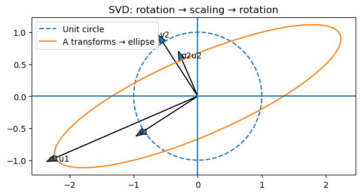
Why SVD Always Exists (Even When Diagonalization Fails)#
We have seen that diagonalization requires:
enough eigenvectors
matrix must be diagonalizable
But many matrices are not diagonalizable.
So the key question:
Why does SVD always exist for any matrix?
Step 1 — The Trick: Look at \(A^T A\)#
Given any matrix \(A \in \mathbb{R}^{m \times n}\), consider:
\(A^T A\)
This matrix has very special properties:
it is symmetric: \((A^T A)^T = A^T A\)
it is positive semi-definite:
\(v^T A^T A v = \|Av\|^2 \ge 0\)
Step 2 — Why This Is Important#
Because \(A^T A\) is symmetric:
👉 it always has:
orthogonal eigenvectors
real eigenvalues
So we can write:
\(A^T A = V \Lambda V^T\)
where:
\(V\) is orthogonal
\(\Lambda\) is diagonal with nonnegative entries
Step 3 — Define Singular Values#
Let:
\(\sigma_i = \sqrt{\lambda_i}\)
Then:
\(\Lambda = \Sigma^2\)
So:
\(A^T A = V \Sigma^2 V^T\)
Step 4 — Construct the Decomposition#
Now define:
\(U = A V \Sigma^{-1}\)
Then we get:
\(A = U \Sigma V^T\)
🎯 Key Insight#
Even if \(A\) itself is messy:
\(A^T A\) is always nice
we can always diagonalize it
this gives us \(V\) and \(\Sigma\)
and from that we build \(U\)
Geometric Interpretation#
Think of \(A\) acting on the unit sphere:
input sphere → transformed into an ellipsoid
SVD finds:
directions of input axes → \(V\)
lengths of axes → \(\Sigma\)
output directions → \(U\)
Why Diagonalization Can Fail#
Diagonalization requires:
\(A v = \lambda v\)
This means:
the direction must stay the same
But many transformations:
rotate
shear
mix directions
👉 so no such directions exist
Why SVD Still Works#
SVD relaxes the requirement:
Instead of:
same direction before and after
it asks:
can we find input directions that map to output directions with simple scaling?
Answer:
👉 always yes
Deep Geometric Insight#
diagonalization → same direction scaling
SVD → input direction maps to output direction
So:
SVD allows different input/output directions, which is why it always exists
🔥 The Real Reason#
SVD works because it studies \(A^T A\), which is always symmetric and therefore always diagonalizable.
Connection to PCA#
Recall:
\(X^T X = V \Sigma^2 V^T\)
👉 PCA is just the eigen-decomposition of \(A^T A\)
So:
PCA = part of SVD
SVD = generalization of PCA
Final Intuition#
diagonalization fails because directions must stay fixed
SVD succeeds because it allows directions to change
One-Sentence Summary#
SVD always exists because it reduces the problem to diagonalizing the symmetric matrix \(A^T A\), whose eigenvectors define the fundamental directions of the transformation.
Mini-Project: PCA, SVD, and Image Compression#
This notebook connects the theory of eigenvectors, covariance, PCA, and SVD through runnable mini-projects.
Projects#
PCA on correlated data
Covariance ellipse visualization
PCA via SVD
SVD image compression
Deep learning connection: low-rank structure
Part 2 — Covariance Matrix#
PCA does not directly ask what \(X\) does as a transformation.
It asks:
Along which direction does the data vary the most?
For centered data, the covariance matrix is:
\(C = \frac{1}{n-1}X^T X\)
The covariance matrix describes the shape of the data cloud:
diagonal entries = variances
off-diagonal entries = correlations
C = np.cov(X.T)
print(C)
[[8.1932 3.8264]
[3.8264 1.8008]]
Part 3 — PCA via Eigendecomposition#
Because \(C\) is symmetric, its eigenvectors are orthogonal.
In PCA:
eigenvectors of \(C\) = principal directions
eigenvalues of \(C\) = variance along those directions
eigvals, eigvecs = np.linalg.eigh(C)
order = np.argsort(eigvals)[::-1]
eigvals = eigvals[order]
eigvecs = eigvecs[:, order]
print("Eigenvalues:")
print(eigvals)
print("\nEigenvectors:")
print(eigvecs)
Eigenvalues:
[9.9827 0.0113]
Eigenvectors:
[[-0.9058 0.4236]
[-0.4236 -0.9058]]
fig, ax = plt.subplots(figsize=(7,7))
ax.scatter(X[:,0], X[:,1], alpha=0.35)
for i in range(2):
vec = 2.5 * np.sqrt(eigvals[i]) * eigvecs[:, i]
ax.arrow(0, 0, vec[0], vec[1], head_width=0.15, length_includes_head=True)
ax.text(vec[0]*1.08, vec[1]*1.08, f"PC{i+1}", fontsize=12)
ax.axhline(0, linewidth=1)
ax.axvline(0, linewidth=1)
ax.set_aspect("equal")
ax.set_title("PCA directions are covariance eigenvectors")
plt.show()
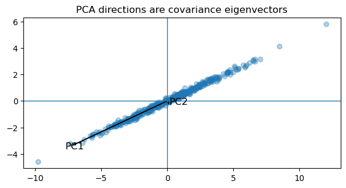
Part 4 — PCA Diagonalizes Covariance#
Let \(P\) contain the eigenvectors of \(C\).
Transform the data:
\(Z = XP\)
Then the new covariance is:
\(C' = P^T C P = D\)
So PCA changes coordinates so the covariance becomes diagonal.
This means the new coordinates are uncorrelated.
P = eigvecs
Z = X @ P
C_new = np.cov(Z.T)
print("Covariance before PCA:")
print(C)
print("\nCovariance after PCA:")
print(C_new)
Covariance before PCA:
[[8.1932 3.8264]
[3.8264 1.8008]]
Covariance after PCA:
[[9.9827 0. ]
[0. 0.0113]]
fig, axs = plt.subplots(1, 2, figsize=(13,5))
axs[0].scatter(X[:,0], X[:,1], alpha=0.35)
axs[0].set_title("Original coordinates: correlated")
axs[1].scatter(Z[:,0], Z[:,1], alpha=0.35)
axs[1].set_title("PCA coordinates: diagonal covariance")
for ax in axs:
ax.axhline(0, linewidth=1)
ax.axvline(0, linewidth=1)
ax.set_aspect("equal")
plt.show()
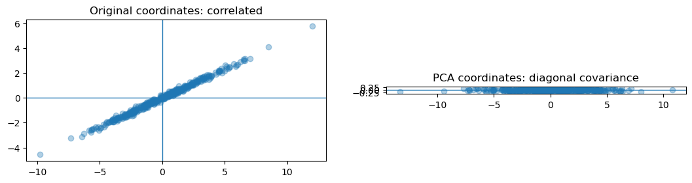
Part 5 — Unit Circle to Covariance Ellipse#
The covariance matrix transforms the unit circle into an ellipse.
ellipse axes = eigenvectors
axis lengths = eigenvalues
The longest axis gives the first principal component.
theta = np.linspace(0, 2*np.pi, 500)
circle = np.vstack([np.cos(theta), np.sin(theta)])
ellipse = C @ circle
fig, ax = plt.subplots(figsize=(7,7))
ax.plot(circle[0], circle[1], linestyle="--", label="Unit circle")
ax.plot(ellipse[0], ellipse[1], label="Covariance ellipse")
for i in range(2):
vec = eigvals[i] * eigvecs[:, i]
ax.arrow(0, 0, vec[0], vec[1], head_width=0.15, length_includes_head=True)
ax.text(vec[0]*1.08, vec[1]*1.08, f"λ{i+1}v{i+1}", fontsize=11)
ax.axhline(0, linewidth=1)
ax.axvline(0, linewidth=1)
ax.set_aspect("equal")
ax.set_title("Covariance geometry: circle becomes ellipse")
ax.legend()
plt.show()
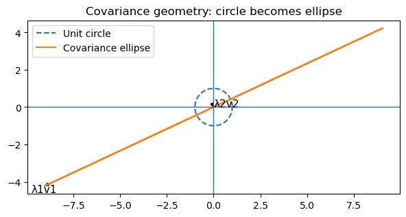
Part 6 — PCA via SVD#
Instead of diagonalizing covariance directly, apply SVD to the centered data matrix:
\(X = U\Sigma V^T\)
Then:
\(X^T X = V\Sigma^2V^T\)
Therefore:
columns of \(V\) are principal directions
\(\Sigma^2/(n-1)\) are covariance eigenvalues
So PCA via covariance eigendecomposition and PCA via SVD are equivalent.
U, s, VT = np.linalg.svd(X, full_matrices=False)
V = VT.T
eigvals_svd = s**2 / (n - 1)
print("Covariance eigenvalues:")
print(eigvals)
print("\nSVD-derived eigenvalues:")
print(eigvals_svd)
print("\nAbsolute alignment between eigenvectors and right singular vectors:")
print(np.abs(eigvecs.T @ V))
Covariance eigenvalues:
[9.9827 0.0113]
SVD-derived eigenvalues:
[9.9827 0.0113]
Absolute alignment between eigenvectors and right singular vectors:
[[1. 0.]
[0. 1.]]
Part 7 — SVD Image Compression#
For any image matrix \(A\):
\(A = U\Sigma V^T\)
A rank-\(k\) approximation is:
\(A_k = U_k\Sigma_kV_k^T\)
Keeping only the top singular values compresses the matrix while preserving the most important structure.
# Synthetic grayscale image generated offline
height, width = 160, 220
yy, xx = np.mgrid[-1:1:complex(height), -1:1:complex(width)]
image = (
np.exp(-8*((xx+0.35)**2 + (yy+0.25)**2)) +
0.8*np.exp(-14*((xx-0.35)**2 + (yy-0.2)**2)) +
0.5*np.sin(8*xx)*np.cos(6*yy)
)
image = (image - image.min()) / (image.max() - image.min())
plt.figure(figsize=(7,5))
plt.imshow(image, cmap="gray")
plt.title("Original synthetic image")
plt.axis("off")
plt.show()
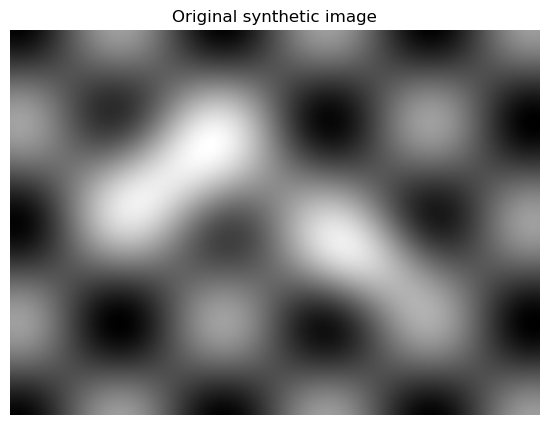
U_img, s_img, VT_img = np.linalg.svd(image, full_matrices=False)
def reconstruct(k):
return U_img[:, :k] @ np.diag(s_img[:k]) @ VT_img[:k, :]
ks = [1, 5, 10, 25, 50, 100]
fig, axs = plt.subplots(2, 3, figsize=(12,8))
for ax, k in zip(axs.ravel(), ks):
ax.imshow(reconstruct(k), cmap="gray", vmin=0, vmax=1)
ax.set_title(f"Rank {k}")
ax.axis("off")
plt.suptitle("SVD image compression")
plt.show()
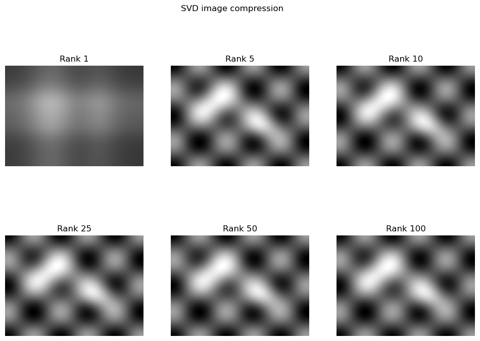
Part 8 — Reconstruction Error and Singular Values#
As \(k\) increases, reconstruction error decreases.
The singular value spectrum shows how much structure each singular direction contributes.
Part 9 — Parameter Savings#
Original image parameters:
\(height \times width\)
Rank-\(k\) SVD parameters:
\(height\cdot k + k + width\cdot k\)
This can be much smaller when \(k\) is small.
original_params = height * width
for k in [5, 10, 25, 50]:
compressed = height*k + k + width*k
print(f"k={k:>3}: compressed params={compressed:>6}, ratio={compressed/original_params:.3f}")
k= 5: compressed params= 1905, ratio=0.054
k= 10: compressed params= 3810, ratio=0.108
k= 25: compressed params= 9525, ratio=0.271
k= 50: compressed params= 19050, ratio=0.541
Deep Learning Connection#
The same idea appears in neural networks.
Large weight matrices can sometimes be approximated as:
\(W \approx U_k\Sigma_kV_k^T\)
This can reduce:
memory usage
parameter count
inference cost
Low-rank structure also appears in:
embeddings
attention matrices
model compression
efficient fine-tuning
Final Unified Insight#
PCA, diagonalization, and SVD all search for better coordinates.
PCA diagonalizes covariance
SVD decouples any matrix into orthogonal directions plus scaling
low-rank approximation keeps the most important directions
The right basis turns complicated structure into simple scaling.
18. Practical deep learning connections#
18.1 Weight compression#
Large dense layers can often be factorized as
[ W \approx U_k\Sigma_kV_k^T ]
to reduce inference cost.
18.2 Embedding analysis#
Singular values of embedding matrices can reveal:
redundancy
anisotropy
concentration of information in a few dominant directions
18.3 Training dynamics#
The spectrum of the Hessian or Fisher-like matrices can reveal:
stiffness
sharp minima
saddle structure
ill-conditioning
18.4 Representation collapse#
If many singular values shrink toward zero, learned representations may collapse into a low-dimensional subspace.
18.5 PCA as pretraining or exploratory analysis#
Before training a model, PCA can expose:
dominant feature directions
noisy dimensions
intrinsic dimensionality
19. Final conceptual summary#
Eigendecomposition#
Use it when a square matrix has enough eigenvectors.
It reveals directions that remain aligned with themselves under the map.
[ A = PDP^{-1} ]
SVD#
Use it for any matrix.
It reveals orthogonal input directions, orthogonal output directions, and scaling in between.
[ A = U\Sigma V^T ]
PCA#
Use it to find directions of maximum variance in data.
It can be computed either through covariance eigenvectors or through data-matrix SVD.
Optimization#
Eigenvalues of curvature matrices reveal how steep, flat, or unstable the loss landscape is.
One sentence summary#
Much of machine learning becomes easier when you express transformations, data, or curvature in the right basis.
Eigendecomposition vs SVD — When to Use What#
Feature |
Eigendecomposition |
SVD |
|---|---|---|
Matrix type |
square only |
any matrix |
Always exists? |
no |
yes |
Directions |
invariant directions |
optimal input/output directions |
Orthogonality |
not guaranteed |
guaranteed |
Use case |
theoretical analysis |
practical ML |
Key Insight#
Eigendecomposition studies when directions stay fixed
SVD studies how directions change in the best possible way
Low-Rank Approximation (Core Practical Tool)#
Low-Rank Approximation — The Most Useful SVD Application#
Given:
\(A = U \Sigma V^T\)
We approximate:
\(A_k = U_k \Sigma_k V_k^T\)
Key Insight#
Most structure of a matrix is captured by the largest singular values.
This is the foundation of:
compression
denoising
efficient modeling
np.random.seed(1)
A = np.random.randn(50, 50)
U, s, VT = np.linalg.svd(A)
errors = []
ks = range(1, 30)
for k in ks:
Ak = U[:, :k] @ np.diag(s[:k]) @ VT[:k, :]
errors.append(np.linalg.norm(A - Ak, ord='fro'))
plt.plot(ks, errors, marker='o')
plt.xlabel("Rank k")
plt.ylabel("Reconstruction Error")
plt.title("Low-Rank Approximation Error")
plt.show()
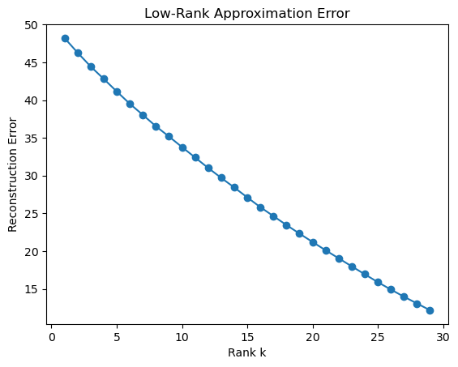
Interpretation#
small \(k\) → large error
increasing \(k\) → rapid improvement
later → diminishing returns
👉 only a few directions carry most information
PCA Revisited — Now Through SVD#
Recall:
\(X = U \Sigma V^T\)
Then:
columns of \(V\) = principal directions
\(\Sigma^2/(n-1)\) = variances
Key Insight#
PCA is SVD applied to the data matrix.
This avoids explicitly computing covariance and is more numerically stable.
Optimization and Hessian — Eigenvalues in Deep Learning#
The Hessian matrix \(H\) describes curvature of the loss.
eigenvectors → principal directions of curvature
eigenvalues → curvature magnitude
Interpretation#
large eigenvalues → steep directions
small eigenvalues → flat directions
negative eigenvalues → saddle points
Key Insight#
Optimization becomes easier when we understand curvature in the eigenbasis.
H = np.array([[6., 2.],
[2., 3.]])
eigvals_H, eigvecs_H = np.linalg.eigh(H)
print(eigvals_H)
[2. 7.]
Deep Learning Connections#
1. Model Compression#
\(W \approx U_k \Sigma_k V_k^T\)
reduces parameters
speeds up inference
2. Embeddings#
Singular values reveal:
redundancy
intrinsic dimension
3. Training Dynamics#
Spectrum of Hessian shows:
stiffness
stability
conditioning
4. Representation Collapse#
Small singular values → low-dimensional collapse
5. PCA for Data Understanding#
detect noise
find structure
reduce dimension
Key Insight#
Spectral structure (eigenvalues & singular values) reveals how information is distributed.
Final Conceptual Summary#
Eigendecomposition#
\(A = P D P^{-1}\)
→ works when directions stay fixed
PCA#
→ finds directions of maximum variance
→ diagonalizes covariance
SVD#
\(A = U \Sigma V^T\)
→ works for any matrix
→ finds optimal orthogonal directions
Unifying Insight#
All these methods find a coordinate system where structure becomes simple.
One Sentence#
Machine learning becomes easier when data and transformations are expressed in the right basis.